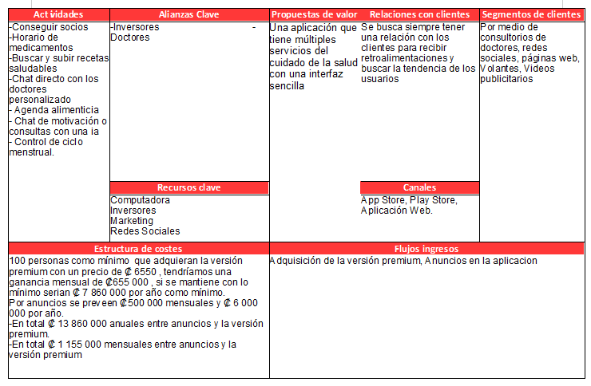
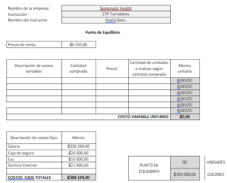

{kind=link}
{kind=link}
{kind=link}

Systematic Life es una aplicación que ofrece distintos servicios/Productos relacionados con el cuidado y control de la salud de forma digital. Distintos rangos de servios, separados por versiones de paga “Premium”.
| Fortalezas |
|
| Oportunidades |
|
| Debilidades |
|
| Amenazas |
|
Ser tu opción para mejorar tu salud día con día.
Systematic Health busca promover los buenos hábitos saludables tanto mentales y físicos a nuestros usuarios.
| Mantener |
|
| Explotar |
|
| Corregir |
|
| Afrontar |
|
Expresión del modelo de negocio:
1.Recursos económicos: la inversión inicial necesaria será por el patrocinio de los socios y equipo de computo ya previos.
2.Recursos humanos:
3.Recursos físicos:Al ser una compañía de desarrollo de software es necesaria un computadora e internet. El sistema de trabajo será virtual, las plataformas que se utilizaran para la comunicación será solventado con la licencias de office.
4.Tiempo: un año y medio
Mejora la imagen corporativa:
El enfoque principal de marketing será la plataforma TikTok e Instagram, se mostrará lo sencillo que es tener tu dieta balanceada, tener una agenda alimenticia y control de medicamentos hasta un chat con inteligencia artificial.
No solo funciones que pueda personalizar el usuario, Una de las publicidades va a ser mediante los doctores, todas estas funciones disponibles, pero comunicadas con tu doctor.
Conocimiento de mercado:
Como mercado tenemos a los clientes de los doctores que van de jóvenes hasta adultos mayores, y por canal de las redes sociales mayoritariamente adolescentes y adultos jóvenes. Si se refiere a nivel socio económico, deben ser usuarios que tengan los recursos de internet y dispositivo tecnológico (Celular o computadora), la zonas donde se ve más estas oportunidades son en las urbanas.
Incorporación RR.HH.:
El beneficio de trabajar en esta empresa es el poder tener la conciencia de ayudar en la salud de los demás, se busca una verdadera responsabilidad y pasión de los empleados por el proyecto y la iniciativa de mejorar cualquier aspecto de la empresa. La seguridad, una aplicación estable y un buen resultado de las funciones, son las responsabilidades de la empresa y de todos los cargos.
Potencia el crecimiento de la empresa:
Cada vez se busca acertar con los requerimientos de los clientes y estar actualizando para estar al día con el mercado y los cambios que van surgiendo de las tecnologías.
Facilita y planifica la gestión:
La investigación de la competencia, es necesaria para mejorar nuestra imagen externa, ¿cómo vende la competencia?, ¿qué funciones tiene?, ¿en qué se centra? Todo esto es de ayuda para poder ser una empresa reconocida y hacer las debilidades de la competencia nuestras fortalezas.
Acceso a ayudas e incentivos
Cualquier tipo de ayuda, capacitación, asesoramiento, es necesaria para el desarrollo e integración de nuestra empresa en el área tecnológica y de salud.
Visión estructurada del negocio:
 Descargar ImagenDatos de la empresa :
Nombre: Systematic Health
Ubicación: Costa Rica
Fecha de inicio de actividad: 5/3/2023
Forma jurídica:
Número de trabajadores actuales: 1
Número de trabajadores previstos: 9
Breve historia de la empresa hasta la fecha:
Este gran proyecto comienza con la búsqueda de una idea para un proyecto que realizaba el Ministerio de Educación de Costa Rica llamado "Expo Ingeniería", con la fundadora Ericka Quirós Siles. Con respecto a la idea de una aplicación sana viene de las muchas enseñanzas de aceptación que se ven en aplicaciones como TikTok e Instagram, llevarlas a una aplicación donde se pueda tener un mayor control, muchos de los socios qué se esperan, son doctores.
Definición del modelo de negocio:
Evita hablar de la idea de negocio El enfoque principal de marketing serán los doctores y las redes sociales, donde se muestra lo sencillo que es tener tu dieta balanceada con los recursos de cada persona o con el apoyo directo de tu doctor. Las ganancias obtenidas son en base a la versión de paga y anuncios.
Misión y visión de la empresa:
Ahora la empresa tiene todos los planes financieros y de mercadeo, foda, meca y la publicidad necesaria, en 5 años será una de las aplicaciones de salud más Utilizadas, se estará en busca de inversores y atentos a las mejoras y actualizaciones.
Misión: Systematic Health busca promover los buenos hábitos saludables tanto metáles y físicos a nuestros usuarios.
Visión: Ser tu opción para mejorar tu salud día con día.
Público objetivo y descripción del valor del producto para ese público:
Ahora se prevén 100 pero se espera a un futuro miles hasta 1 millón de usuarios tanto en nuestras redes sociales y las de las instalaciones de nuestra aplicación App Store y Google play.
Factores diferenciales y posicionamiento en el mercado:
Como diferenciación de la competencia Systematic Health no se encasilla en 3 o 2 funciones, como lo serían las apps que se encuentran posesionadas. Pero si se tuviera que analizar de las aplicaciones que sí tienen muchas funciones, la forma de la distribución dentro del programa no lo hace una interfaz sencilla, característica que nosotros buscamos cumplir a toda costa.
Fase actual de desarrollo del producto o servicio:
Inicio, ya que apenas se están haciendo los análisis del mercado y lo que funciona para el desarrollo de la aplicación.
Inversión necesaria y financiación:
Al ser una empresa tecnológica, se necesita un dispositivo donde desarrollar y licencias para subir la aplicación a las plataformas, dentro del inventario de inversión está:
Una laptop inspiron 15 3000 = ₡ 340 000
Licencia App Store Desarrollador = ₡53435,61
Licencia Play Store = ₡113493,8
Breve descripción del equipo de profesionales que está al frente del negocio:
Diseñador gráfico, programadores de aplicaciones y Analistas de datos y asistente de marketing. Para una crecimiento satisfactorio sin pérdidas o inversiones fallidas.
| Actividad | Esta aplicación se centra en servicios de salud, el producto estrella sería la comunicación con el doctor, como lo sería agenda de citas médicas, recetas o un chat directo, Este servicio será premium junto con la entidad médica. Esta será una aplicación principalmente para Android y App Store. Pero tiene uso en línea para computadoras.
|
| Descripción | Funcionalidades dirigidas al área del cuido y manejo de la salud, la aplicación cuenta con una interfaz sencilla, con las opciones/servicios que puedes utilizar a la vista, una configuración sencilla , y el uso de servicios en linea es estable. |
| Valor Añadido | Como diferenciación de la competencia Systematic Health no se encasilla en 3 o 2 funciones, como lo serian las apps que se encuentran posesionadas. Pero si se tuviera que analizar de las aplicaciones que si tienen muchas funciones, la forma de la distribución dentro del programa no lo hace una interfaz sencilla, característica que nosotros buscamos cumplir a toda costa. |
| Mercado | La competencia la mayoría de veces no hace no lazo con el usuario , nosotros nos centramos en conseguir la confianza del cliente, con usuarios que van desde menores de edad hasta adultos mayores. Se busca un gran aporte de promoción de la aplicación por medio de los doctores y redes sociales. |
| Organigrama |
|
| Equipo Directivo | Nuestro equipo directivo tiene el suficiente conocimiento en las áreas que se ocupan para el desarrollo de la empresa, vemos necesario que sin importar el departamento entiendan todos los sentidos de la empresa y se comprometan por el crecimiento de la misma, para que puedan trabajar con un análisis mas coherente tomando en cuenta a todos los departamentos. |
| Perfiles Laborales | Todos las gerencias y departamentos tienen como responsabilidad el crecimiento de la aplicación y la confianza o transparencia con los demás trabajadores que esto ayudara a facilitar la resolución de problemas. Las funciones principales de cada gerencia son, promocionar y llevar la idea clara a los usuarios nuevos, un desarrollo de la aplicación perfecto, un buen control de finanzas, un buen manejo de los datos, un diseño innovador y sencillo de la aplicación. |
| Política RR.HH. | La ética es el factor más importante pero aun mas importante la motivación de mejorar y tener responsabilidad con la empresa, además los aspectos laborales y se es flexible con los horarios porque muchos de nuestros trabajadores trabajan remotamente. |
| Plan Expansión | Se planea para dentro de 3 años cumplir con el organigrama previsto e ir agregando departamentos relacionados a la respectiva gerencia, los gastos serán el triple o más de elevados por los salarios y tecnologías que se tienen que adquirir para mantenerse en la misma tendencia. Y logran en 5 años ser una empresa y aplicación reconocida en todas las plataformas digitales, ya que Systematic Health siempre buscara innovar y crecer junto a la tecnología. |
| Aspectos Generales | El mercado de aplicaciones para el cuido de la salud , tienen como un promedio de 100 000 descargas. Systematic Health maneja una tendencia de inteligencia artificial, que esta en constante mejoras y tiene grandes competencias como lo es Chat gpt. El factor clave es la adaptación en el área y la explotación de las oportunidades, como la poca competencia en el área de aplicaciones de salud y la clave de éxito financiero depende de las descargas y números de usuarios en la aplicación. |
| Clientes Potenciales | Como mercado tenemos a los clientes de los doctores que van de jóvenes hasta adultos mayores, y por canal de las redes sociales mayoritariamente adolescentes y adultos jóvenes. Si se refiere a nivel socio económico, deben ser usuarios que tengan los recursos de internet y dispositivo tecnológico(Celular o computadora), la zonas donde se ve mas estas oportunidades son en las urbanas. |
| Análisis Competidores | La competencia mas posesionada tiene descargas que van desde los 10 mil hasta 10 Millones, sin contar aplicaciones que son parte de empresas transnacionales como Google (100 millones de descargas) o Samsung (1000 Millones de descargas). Su forma de marketing más común es mediante relojes inteligentes.Y sus versiones de paga van de ₡ 3000 a ₡ 7000. |
| Barreras de Entrada | Systematic Health tiene barreras, pero no por ser una aplicación de salud sino por la saturación de aplicaciones. Esto podría ser un factor negativo porque podría hacer difícil posicionarse y hacerse conocido. Pero como fortaleza tenemos que la aplicación busca un gran compromiso con sus funciones y una verdadera interacción con el cliente. Y al ser nuestro marketing, mediante doctores y redes sociales podrá ser mas fácil hacernos conocidos. Uno de los problemas que podrían surgir con el reconocimiento de la aplicación, es que los métodos o las definiciones no concuerden con el de los usuarios, por la diversidad de usuarios que se tendrían, que se podría evitar con una mayor personalización del usuario, para que pueda no sea generalizado y se adapte al cliente y lo que busca |
| Estrategia de Precios | Nuestra ganancias son por anuncios y adquisición de las versiones de pago, la estrategia que entra junto a estas versiones premium, el 1°Plan ₡ 6550 (mensual) y el 2°Plan ₡ 65 000 (Anual). Con estrategia se busca tener usuarios verdaderamente comprometidos con la aplicación o un cliente fijo, con precio mas bajo, que si se adquiriera todos los meses con un plan mensual. |
| Planificación de las Ventas | Se ha fijado un objetivo, que sera llegar a las 100 mil descargas y que el mínimo de personas en adquirir la versión de paga pase de 100 a 1000. Dentro de 1 año y medio. |
| Canales de Distribución | Dentro de los canales , se encuentra Play Store , App Store y la aplicación web, donde se podrá hacer uso de la aplicación, redes sociales ( Redes sociales como Instagram, Tik Tok, YouTube y Facebook) Y consultorios de doctores, donde por la gran influencia que tienen los doctores en sus propios clientes, podrán querer adquirir la aplicación. |
| Promoción y Publicidad | Como estrategia de marketing sera empleara en las plataformas como TikTok,Instagram, y en YouTube, se mostrara lo sencillo que seria controlar y cuidar tu salud. Además mediante volantes, anuncios publicitarios y consultorios de doctores. Y con una muestra mas completa, con nuestra pagina web. |
| Inversión Inicial | Al ser una empresa tecnológica, se necesita un dispositivo donde desarrollar y licencias para subir la aplicación a las plataformas, dentro del inventario de inversión esta:
Una laptop inspiron 15 3000 = ₡ 340 000 Licencia App Store Desarrollador = ₡53435,61 Licencia Play Store = ₡13493,84 |
| Financiación Prevista | La financiación prevista se financia por los inversores. |
| Previsión de Tesorería | No se tendrá una previsión de tesorería. |
| Punto de equilibrio |  |